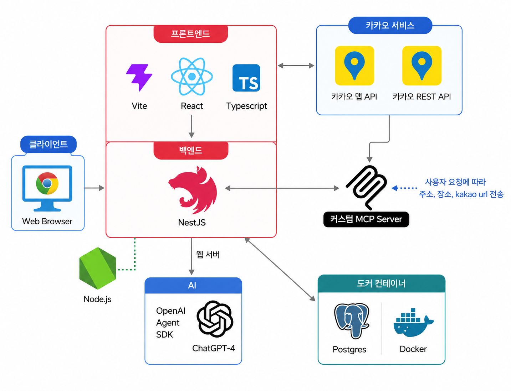

01 표지
🌴
정글 여행
국내 숨은 여행 코스를 지도와 AI로 탐색
장소 순서 기반 코스 공유 · AI 유사 코스 추천 · 실제 장소 정보 연결
React
NestJS
PostgreSQL · pgvector
OpenAI
Kakao Maps
02 프로젝트 개요
기존 여행 후기의 한계
1
기존 후기
장소명과 감상 중심
2
부족한 점
방문 순서와 이동 동선 파악 어려움
3
해결 방식
장소를 순서대로 등록하고 지도에 표시
4
확장
쌓인 코스 데이터를 AI 추천과 질문 답변에 재활용
03 주요 구현 기능
게시판 기능과 AI 기능의 결합
게시판 기능
- 🔐회원가입과 로그인
- ✍️여행 코스 게시글 작성, 수정, 삭제
- 🗺️경유지 저장과 지도 표시
- 🔎검색, 태그, 페이징
- 💬댓글, 좋아요, 저장, 마이페이지
- 🧭장소 순서 기반 코스 동선 확인
AI 기능
- 🧠RAG 기반 유사 코스 추천
- 🗨️게시판 데이터를 활용한 Q&A
- 📍MCP를 통한 실제 장소 검색
- 🤖Agent 기반 여행 질문 도우미
- 🔗답변 + 참고 코스 + 장소 칩 반환
AI 기능을 별도 실험 기능이 아닌, 게시판 데이터 활용을 위한 흐름으로 연결
04 전체 아키텍처
전체 아키텍처

05 RAG 기능
RAG: 게시판 데이터를 지식으로 전환
RAG
- 목표: 게시판 글을 AI 답변의 근거로 사용
- 저장: 제목 · 본문 · 지역 · 태그 · 경유지 임베딩
- 보관: PostEmbedding(pgvector)에 벡터 저장
- 검색: 질문 벡터와 게시글 벡터 비교
- 생성: 가까운 코스를 컨텍스트로 답변/추천 생성
1게시글을 저장해 둘 때
📝게시글
→
🧬임베딩 변환
→
🗄️pgvector
벡터 저장
벡터 저장
저장된 벡터를 질문과 비교
2질문에 답할 때
💬질문
→
🧬임베딩 변환
→
🔍유사 코스
검색
검색
→
🤖AI 답변
생성
생성
06 MCP 기능
MCP: 장소 검색 기능의 도구화
MCP
- 목표: Kakao 장소 검색을 AI 도구로 분리
- 도구: place_search로 장소 키워드 수신
- 호출: NestJS → MCP 서버 → Kakao Local API
- 결과: 장소 이름 · 주소 · 좌표 · 링크 반환
- 보안: API 키와 검색 로직은 백엔드에 보관
장소 검색 도구 호출 흐름
🖥️NestJS
(MCP 클라이언트)
(MCP 클라이언트)
→
🔌MCP 서버
place_search
place_search
→
🗺️Kakao
Local API
Local API
→
📍장소 이름
주소 · 좌표
주소 · 좌표
🔒
API 키와 검색 로직은 백엔드(MCP 서버)에만 보관 — 브라우저에 노출 안 함
07 Agent 기능
Agent: RAG와 MCP의 조합
Agent
- 질문: 사용자의 여행 질문 입력
- 판단: function calling으로 필요한 도구 선택
- 검색: RAG로 게시판 관련 코스 수집
- 확인: MCP로 실제 장소 주소 · 좌표 조회
- 응답: 답변 · 참고 게시글 · 장소 칩 반환
“부산에서 바다와 맛집을 같이 즐길 수 있는 코스를 추천해줘”
💬질문
→
🤖Agent
도구 선택
도구 선택
→
🔍RAG · 관련 코스 검색
📍MCP · 실제 장소 확인
→
✅최종 답변
글 + 장소 칩
글 + 장소 칩
🧠
질문 상황에 따라 Agent가 두 도구를 골라 조합
08 데모
데모

09 회고
AI 기술별 역할 정리
RAG
내부 데이터 활용
게시판 코스를 임베딩으로 저장 · 질문과 가까운 글 검색 · 출처 기반 답변
MCP
외부 기능 분리
장소 검색과 API 키를 백엔드 도구로 분리 · AI가 호출 가능하게 만듦
Agent
도구 조합
질문에 따라 RAG와 MCP를 선택 · 답변과 장소 칩까지 함께 구성
10 한계점과 개선 방향
한계점과 개선 방향
한계점
- 외부 API 의존: 비용, 응답 속도, 레이트리밋 영향
- 임베딩 캐싱 부족: 같은 질문도 매번 임베딩 생성
- 답변 스트리밍 미적용: 사용자가 느끼는 대기 시간 증가
- 긴 게시글 처리 한계: 본문 일부 정보 누락 가능
개선 방향
- 자주 들어오는 질문에 대한 임베딩 캐싱
- AI 답변 스트리밍 적용
- 긴 게시글을 청킹해서 더 정교하게 검색
- Agent 도구 확장과 이미지 저장 구조 개선
- 반복 질문/인기 질문 프리컴퓨트
프로젝트 의미: AI 기능 추가를 넘어, 서비스 데이터와 외부 도구의 연결 방식 실험